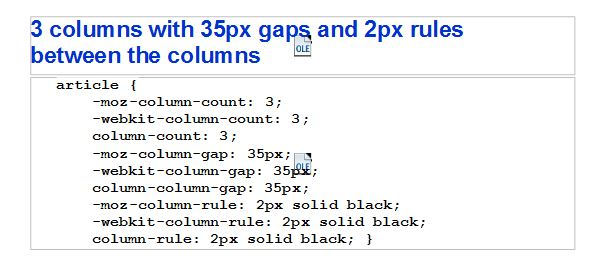

Portfolio Prototype Site
Multiple columns are used on the contact page. Also, a seperate CSS file was used as per the PDF slide instructions for Assignment 6. Otherwise, I think I touched on everything covered already when playing around with the site during our extended week. I didn't read ahead on the assignment, but instead found a lot of it on the online tutorial site that was recommended.
The purpose of this site is to act as a prototype for a future portfolio. The substance is lacking, but in the future I'd like to build it up to something worthwhile to show. The assignment stated we had some freedom in determining what to do with the site, so I thought it'd be a good opportunity to develop something I could use in the future.
I used as much as I could from the book and from the referenced websites to format the CSS for the site to meet the requirements for Assignment 5. Also, I tried to experiment with it a bit as I had an additional week to work on the assignment.
I think there may be an error with this pdf. "column-column-gap: 35px;" throws an error in Brackets when I tried to use it. Instead I used "column-gap: 20px;".
Also, thanks to the instruction from the textbook, I saw how to more easily style elements within articles so that classes aren't needed so frequently!